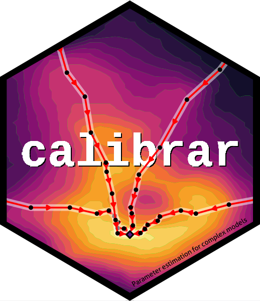

Authors and Citation
Authors
-
Ricardo Oliveros-Ramos. Author, maintainer.
Citation
Source: inst/CITATION
Oliveros–Ramos R, Shin Y (2025). “calibrar: An R package for fitting complex ecological models.” Methods in Ecology and Evolution. https://doi.org/10.1111/2041-210X.14452.
@Article{,
title = {calibrar: An R package for fitting complex ecological models},
journal = {Methods in Ecology and Evolution},
author = {Ricardo Oliveros--Ramos and Yunne--Jai Shin},
year = {2025},
abstract = {The fitting or parameter estimation of complex ecological models is a challenging optimisation task, with a notable lack of tools for fitting complex, long runtime or stochastic models. calibrar is an R package that is dedicated to the fitting of complex models to data. It is a generic tool that can be used for any type of model, especially those with non-differentiable objective functions and long runtime, including individual or agent based models. calibrar supports multiple phases and constrained optimisation, includes 20 optimisation algorithms, including derivative-based and heuristic ones. It supports any type of parallelisation, the capability to restart interrupted optimisations for long runtime models and the combination of different optimisation methods during the multiple phases of a calibration. User-level expertise in R is necessary to handle calibration experiments with calibrar, but there is no need to modify the model's code, which can be programmed in any language. It implements maximum likelihood estimation methods and automated construction of the objective function from simulated model outputs. For more experienced users, calibrar allows the implementation of user-defined objective functions. The package source code is fully accessible and can be installed directly from CRAN.},
url = {https://doi.org/10.1111/2041-210X.14452},
}
Oliveros–Ramos R, Verley P, Echevin V, Shin Y (2017). “A sequential approach to calibrate ecosystem models with multiple time series data.” Progress in Oceanography, 151, 227-244. ISSN 0079-6611, https://doi.org/10.1016/j.pocean.2017.01.002.
@Article{,
title = {A sequential approach to calibrate ecosystem models with multiple time series data},
journal = {Progress in Oceanography},
volume = {151},
pages = {227-244},
year = {2017},
issn = {0079-6611},
url = {https://doi.org/10.1016/j.pocean.2017.01.002},
author = {Ricardo Oliveros--Ramos and Philippe Verley and Vincent Echevin and Yunne--Jai Shin},
abstract = {When models are aimed to support decision-making, their credibility is essential to consider. Model fitting to observed data is one major criterion to assess such credibility. However, due to the complexity of ecosystem models making their calibration more challenging, the scientific community has given more attention to the exploration of model behavior than to a rigorous comparison to observations. This work highlights some issues related to the comparison of complex ecosystem models to data and proposes a methodology for a sequential multi-phases calibration (or parameter estimation) of ecosystem models. We first propose two criteria to classify the parameters of a model: the model dependency and the time variability of the parameters. Then, these criteria and the availability of approximate initial estimates are used as decision rules to determine which parameters need to be estimated, and their precedence order in the sequential calibration process. The end-to-end (E2E) ecosystem model ROMS-PISCES-OSMOSE applied to the Northern Humboldt Current Ecosystem is used as an illustrative case study. The model is calibrated using an evolutionary algorithm and a likelihood approach to fit time series data of landings, abundance indices and catch at length distributions from 1992 to 2008. Testing different calibration schemes regarding the number of phases, the precedence of the parameters' estimation, and the consideration of time varying parameters, the results show that the multiple-phase calibration conducted under our criteria allowed to improve the model fit.},
}